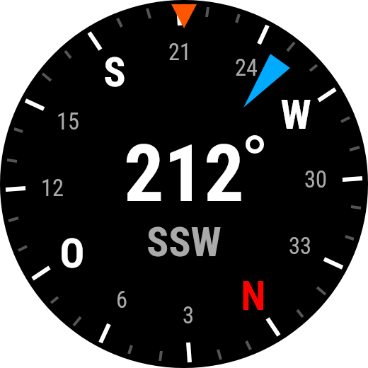

Bedienungsanleitung für Wingfoil Sessions auf der Garmin Uhr
Anleitungsrevision V2 · Stand: 27.11.2026
SurfsApp gemeinsam weiterentwickeln
Du möchtest die Weiterentwicklung unterstützen oder wünschst dir eine bestimmte Funktion? Bereinigte FIT Dateien aus echten Sessions helfen mir, sportartspezifische Funktionen zu verbessern und neue Features zu entwickeln, zum Beispiel die Erkennung spezieller Manöver. Entferne persönliche Informationen vorab mit dem FIT Privacy Cleaner. Die Möglichkeit, mir die bereinigte FIT Datei direkt zu übermitteln, wird im FIT Privacy Cleaner ergänzt.
1 Session vorbereiten und starten
Öffnen Sie SurfsApp auf der Uhr und wählen Sie Wingen. Falls Wingen nicht in der Sportauswahl erscheint, aktivieren Sie es unter Einstellungen → Sportarten.
Öffnen Sie die Einstellungen für Wingen und prüfen Sie vor dem Start die Bereiche Modus, Defaults, Seiten und IQ Felder. Die Wing Einstellungen sind von Windsurfen und Surfen getrennt gespeichert.
Wählen Sie auf der Startseite Wingen.
Drücken Sie START. Die Vorschau öffnet sich. Sie können die verfügbaren Seiten ansehen, ohne bereits aufzuzeichnen.
Drücken Sie erneut START, um die Aufnahme zu beginnen.
Nach der Session öffnen Sie mit START/STOP das Aktionsmenü, wählen Speichern und bestätigen mit Ja.
Die Aufnahme enthält die GPS Strecke, Geschwindigkeit, Zeit, Herzfrequenz und die für Wingen verfügbaren Kennzahlen. Die Aktivität wird in Garmin Connect gespeichert.
2 Seiten während der Aufnahme
Mit HOCH und RUNTER blättern Sie durch die Seiten. Welche zusätzlichen Seiten erscheinen, hängt von den gewählten Modi und davon ab, ob bereits passende Ereignisse erkannt wurden.
Hauptseite Aktive Zeit, Tempo, Herzfrequenz, Strecke und Pulszonen.Maxima Höchstgeschwindigkeit, Herzfrequenz und weitere Bestwerte.Downwinds Eigene Übersichtsseite für Downwind Werte.Jumps Liste der erkannten Sprünge mit Höhe und Flugzeit.

Kompass Orientierung während der Session.
Die Downwind Funktion ist keine automatische GPS Erkennung. Wenn Sie einen bestimmten Downwind Abschnitt für eine spätere Analyse markieren möchten, schalten Sie sowohl Lernphase als auch Downwind ein. Drücken Sie während der Aufnahme am Beginn des Abschnitts BACK und am Ende erneut BACK. Drei kurze Vibrationen bestätigen das Ende der Aufzeichnung. Die Downwind Seite kann weiterhin Striche zeigen, weil sie keine automatisch gezählten Downwind Werte ausweist. Eine eigene Downwind Diagrammansicht steht in der Web App nicht zur Verfügung.
Die Jump Liste erscheint, sobald mindestens ein Sprung erkannt wurde. Eigene Seiten können Sie zusätzlich mit den für Wingen verfügbaren Werten belegen.
3 Jumps und Detailstufen
SurfsApp kann beim Wingen Jumps erkennen und ihre Anzahl sowie wichtige Kennzahlen in der Session speichern. Ein Jump ist ein Sprung mit erkannter Flugphase. Die angezeigte Höhe ist eine Berechnung aus den Bewegungsdaten der Uhr und keine direkte Höhenmessung.
Unter Wingen → Modus → Jump wählen Sie die gewünschte Detailstufe:
Stellung
Was aufgezeichnet wird
Geeignet für
Aus
Keine Jump Erkennung. GPS, Tempo, Strecke und Puls werden normal weiter aufgezeichnet.
Wenn Sie keine Sprungauswertung benötigen.
Connect
Jumps werden erkannt und gezählt. Kennzahlen wie Anzahl, Höhe und Flugzeit stehen für die Session bereit.
Eine übersichtliche Sprungstatistik ohne zusätzliche Bewegungsdetails.
Visu
Wie Connect, zusätzlich werden Bewegungsdaten für eine detailliertere Analyse in der SurfsApp Web App gespeichert.
Wenn Sie einzelne Sprünge genauer untersuchen möchten.
Jump ab legt die Mindesthöhe fest, ab der ein Sprung berücksichtigt wird. Der Startwert ist 0,3 m. Ein höherer Wert blendet kleinere Hüpfer eher aus.
Wählen Sie Visu vor Beginn der Session, wenn Sie die zusätzlichen Details später ansehen möchten. Die Uhr benötigt dafür mehr Speicher und kann beim Speichern länger mit dem Schreiben der Sprungdaten beschäftigt sein. Ohne Visu lassen sich fehlende Bewegungsdetails später nicht aus der normalen GPS Spur wiederherstellen.
4 Wingen Einstellungen
Öffnen Sie die Einstellungen mit HOCH lang auf Uhren mit fünf Tasten. Bei der vívoactive 4 wählen Sie Einstellungen auf der Startseite. Danach wählen Sie Wingen.
Menü
Einstellung
Funktion
Modus
Lernphase
Erfasst zusätzliche Daten zur Armbewegung. Wenn die zugehörigen Messwerte vorhanden sind, können Sie diese später in der Web App im Bereich Wingen Lernphase im zeitlichen Verlauf betrachten. Für eine normale Wingen Session ist diese Option nicht erforderlich.
Modus
Downwind
Schaltet die Downwind Funktion frei. Zusammen mit der Lernphase können Sie einen Downwind Abschnitt während der Aufnahme mit BACK am Beginn und am Ende markieren. Es gibt keine automatische GPS Zählung.
Modus
Jump
Wählt Aus, Connect oder Visu. Die Einstellung bestimmt, ob und wie Sprünge erfasst werden.
Defaults
Fahrt ab
Geschwindigkeit, ab der nach einer automatischen Pause die Fahrt wieder aufgenommen wird. Startwert 5,5 km/h.
Defaults
Gleitschwelle
Geschwindigkeit, ab der die Zeit als Gleiten gewertet wird. Startwert 11 km/h.
Defaults
Jump ab
Mindesthöhe für die Jump Erkennung. Wird nur angezeigt, wenn Jump eingeschaltet ist. Startwert 0,3 m.
Defaults
Pause unter
Bei automatischer Pause die Geschwindigkeit, unter der die Pause beginnen kann. Startwert 5 km/h.
Defaults
Pause nach
Wie lange die Geschwindigkeit unter dem Grenzwert liegen muss, bevor automatisch pausiert wird. Startwert 15 Sekunden.
Seiten
Seite 1 und Seite 2
Eigene Anzeigeseiten einschalten, Layout und Datenfelder wählen.
IQ Felder
Connect IQ Kennzahlen
Auswahl, welche zusätzlichen Kennzahlen in der Garmin Aktivität gespeichert werden.
Automatische oder manuelle Pause
Die Pausensteuerung gilt für Windsurfen und Wingen. Bei Automatic pausiert die Aufnahme, wenn die Geschwindigkeit länger als die eingestellte Zeit unter Pause unter bleibt. Sobald Fahrt ab wieder erreicht wird, setzt die Aufnahme fort. Bei Manuell steuern Sie Pause und Fortsetzen selbst über das Aktionsmenü.
Beim Surfen wird nur manuell pausiert. Die Wingen Einstellungen haben keinen Einfluss auf die Surf Sportart.
Änderungen an Fahrtgrenzen, Pausengrenzen und zusätzlichen Datenmodi können erst für die nächste Session gelten. Zeigt die Uhr den Hinweis „Umschaltung bei neuer Session“, bleibt die laufende Aufnahme unverändert.
5 Eigene Seiten und IQ Felder
Eigene Seiten
Sie können zwei eigene Seiten für Wingen einrichten. Jede Seite bietet ein Layout mit einer bis sechs Zellen. In jeder Zelle wählen Sie einen Wert, zum Beispiel Tempo, Vmax, Herzfrequenz, Strecke, Zeit oder eine verfügbare Wingen Kennzahl.
Öffnen Sie Wingen → Seiten → Seite 1 oder Seite 2. Schalten Sie Aktiv ein, wählen Sie ein Layout und legen Sie unter Belegung die Inhalte der Zellen fest. Diese Seiten gelten nur für Wingen.
IQ Felder
Eigene Seiten und IQ Felder erfüllen unterschiedliche Aufgaben. Eigene Seiten zeigen Werte live auf der Uhr. IQ Felder speichern ausgewählte Kennzahlen zusätzlich in der Garmin Aktivität, damit sie in Garmin Connect verfügbar sind. Dazu gehören je nach Auswahl beispielsweise Geschwindigkeit, Manöver, Fahrzustände und Jump Werte.
Die Auswertung in SurfsApp berechnet viele Kennzahlen unabhängig davon aus den gespeicherten GPS und Bewegungsdaten. Die Auswahl der IQ Felder bestimmt daher vor allem, welche Zusatzwerte Garmin Connect direkt erhält.
Garmin begrenzt die Zahl der zusätzlichen IQ Felder auf 16 pro Aktivität. Jump Visu benötigt selbst Speicherplätze für seine Messwerte. Wenn viele Zusatzfelder ausgewählt sind, können deshalb nicht alle in Garmin Connect erscheinen. Die Uhr zeigt in der Auswahl an, wie viele Werte gewählt sind und wie viele Plätze verfügbar sind. Die Auswertung in SurfsApp bleibt davon unabhängig.
6 Session in der Web App auswerten
Öffnen Sie die SurfsApp Web App und wählen Sie Ihre Wingen Session in der Sessionsliste. Die Web App ergänzt die Uhranzeige um eine größere Übersicht, eine Karte und detailliertere Diagramme.
Bereich
Inhalt
Sessions
Aufnahmen sortieren, nach Sportart filtern, Favoriten setzen und Kommentare ergänzen.
Karte
GPS Strecke und Tempoverlauf räumlich betrachten. Marker helfen beim Wiederfinden bestimmter Stellen.
Zahlen
Zeit, Strecke, Geschwindigkeit, Herzfrequenz, Bestwerte und Wingen Kennzahlen.
Diagramme
Tempo und weitere verfügbare Messwerte über die Zeit untersuchen.
Wingen Lernphase
Bei passenden Aufnahmen mit aktivierter Lernphase stehen zusätzliche Messwerte zur Armbewegung als zeitlicher Verlauf zur Verfügung.
Jump Analyse
Bei einer Session mit Jump Visu können zusätzliche Bewegungsdaten einzelner Sprünge untersucht werden.
Auf schmalen Bildschirmen wechseln Sie über die Reiter am unteren Rand zwischen Sessions, Zahlen und Diagrammen. Auf einem größeren Bildschirm stehen die Bereiche in der Vollansicht zur Verfügung. Zwischen den Darstellungen kann umgeschaltet werden.
Die Detailtiefe hängt von der Aufnahme ab. GPS Strecke, Tempo, Zeit und Puls sind auch ohne Visu verfügbar. Eine genauere Sprunganalyse benötigt dagegen die zusätzlichen Daten aus Jump Visu. Die Web App kann solche Daten nicht nachträglich aus einer normalen GPS Spur erzeugen.
7 Hinweise und Fehlersuche
Die Downwind Seite zeigt nur Striche
Das ist bei normalen Aufnahmen möglich. Die Downwind Seite ist bereits als Anzeige vorhanden, zählt Downwinds aber nicht automatisch. Sie können sie unter Wingen → Modus → Downwind ausblenden, wenn Sie sie nicht benötigen.
Es wurde kein Jump erkannt
Prüfen Sie, ob Jump auf Connect oder Visu steht. Kontrollieren Sie außerdem Jump ab. Ein höherer Mindestwert filtert kleinere Sprünge aus. Prüfen Sie nach der nächsten Aufnahme die Liste auf der Uhr und die Kennzahlen in der Web App.
Es fehlen Detaildaten zu einem Sprung
Prüfen Sie, ob Jump vor dem Start auf Visu stand. Connect liefert die Zählung und Kennzahlen, aber nicht die vollständigen Bewegungsdaten für eine detaillierte Analyse.
Eine Einstellung ändert sich während der Aufnahme nicht
Einige Einstellungen sind an den Start der Aufnahme gebunden. Wenn die Uhr „Umschaltung bei neuer Session“ anzeigt, wird der neue Wert erst beim nächsten Start verwendet.